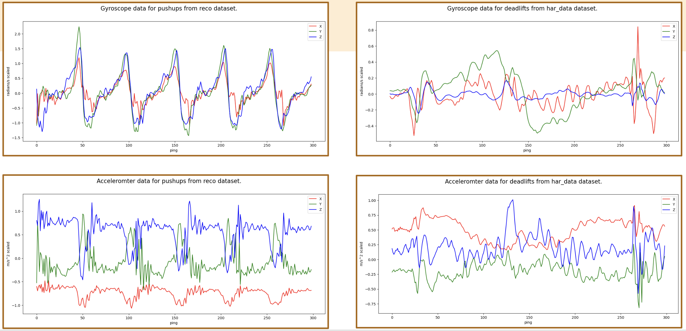

SmartWatch Exercise Detection System

Project Overview
The SmartWatch Exercise Detection System is an innovative solution that uses machine learning to automatically detect and log exercises based on wrist-worn sensor data. Unlike traditional fitness apps that require manual logging, our system recognizes movements in real-time, providing seamless workout tracking without interrupting the exercise flow.
Motivation
Current fitness tracking solutions have significant limitations: - They require manual input of exercise names and repetitions - Users need to pause workouts to log their activity - Apps often have overwhelming interfaces with thousands of exercise options - Manual tracking leads to inconsistent logging and disrupted workout flow
Our system addresses these pain points by leveraging the sensors already present in smartwatches to automatically detect exercises as they happen, enabling effortless and accurate workout tracking.
Data Collection
We utilized three large-scale datasets containing over 4,000 minutes of exercise data with varying: - Exercise types (32 different exercise classes) - Participants (ensuring diversity in movement patterns) - Sensor sampling frequencies (to accommodate different devices)
Each dataset included synchronized measurements from: - 3-axis accelerometer (measuring linear acceleration) - 3-axis gyroscope (measuring rotational movement)
Data Processing
Our data processing pipeline involved several key steps: - Consolidating exercise names across multiple datasets - Normalizing sampling frequencies to ensure consistent input - Careful participant-based train/test splitting to prevent data leakage - Implementing a windowing approach with overlapping segments to: - Account for variations in exercise speed between individuals - Increase the number of training samples - Create more robust feature recognition
Model Architecture
After extensive experimentation, our final CNN architecture included: - Multiple convolutional layers with small kernel sizes to capture complex movement patterns - Dropout layers to prevent overfitting - Balanced focal loss to address class imbalance issues - One-dimensional convolutions across time for each sensor dimension
Key findings from our architecture exploration: - More convolutional layers with smaller kernel sizes outperformed fewer layers with larger kernels - Surprisingly, fewer fully connected layers improved performance by avoiding overfitting - A balanced loss function significantly improved F1-macro scores across all classes
Model Evaluation
Our final model achieved: - 91% overall accuracy across 32 exercise classes - Similar F1-macro and accuracy scores, indicating good performance across all classes - 100% recall for some exercises like planks (though with lower precision) - Lower performance on exercises with high variability like tricep extensions
Analysis of the model's embeddings revealed interesting patterns: - Exercises with standardized hand positions (like deadlifts) had tightly clustered embeddings - Exercises with variable hand positions (like squats) had more dispersed embeddings
Validation & Deployment
We conducted rigorous validation through multiple approaches: - Cross-dataset validation (training on two datasets, testing on the third) - Development of an iOS application for real-time testing - Transfer learning to adapt the model to iPhone-specific sensor characteristics
Our real-time iOS prototype demonstrated: - Successful integration with the iPhone's Neural Engine for real-time inference - 95% accuracy after fine-tuning with minimal device-specific data (just 20 repetitions per exercise) - Potential for real-time rep counting based on movement pattern recognition
Future Work
We're continuing to develop this system with several exciting directions: - Expansion to smartwatch platforms beyond iPhone - Implementation of repetition counting functionality - Creation of a crowdsourced data collection system to improve model robustness - Addition of heart rate data to better distinguish between similar movement patterns - Further refinement of exercise classifications to improve accuracy for similar movements
Conclusion
This project demonstrates the potential for machine learning to transform fitness tracking by eliminating manual logging requirements. With just wrist-worn sensors, we can accurately identify a wide range of exercises in real-time, creating a more seamless and effective workout experience. Our system not only improves the user experience but also enables more consistent and accurate exercise logging for better fitness outcomes.
Technologies Used
- Python
- TensorFlow
- Core ML
- iOS
- Accelerometer
- Gyroscope